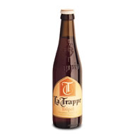

Home
Birre
Menu
Fotogallery
Dove siamo
Contattaci
Guestbook
Newsletter
La Trappe Dubbel
 |
Provenienza: Olanda Fermentazione: Alta Stile: Trappista Gradazione alcolica: 7% Vol Colore: Rubino intenso Aspetto: Bei riflessi rubino su ambra scura con una spuma abbastanza ricca, cremosa e duratura ed un perlage fine e deciso. Olfatto: Intensamente maltato; un aroma deciso di prugna matura ed un profumo inebriante di lievito con un finale erbaceo e floreale del luppolo. Gusto: Fresco e morbido, di tendenza dolce, buona presenza di malto con un corpo ben strutturato ed un retrogusto secco e rinfrescante, fruttato e persistente. Note generali: Nata nel 1884 ad opera dei monaci trappisti in abbazia, La Trappe è una birra artigianle riservata agli estimatori dei prodotti autentici. Abbinamento: Prosciutto e salumi strutturati, formaggi di media stagionatura, ottima con paste ripiene, primi elaborati. Carni brevemente grigliate in spezzatino. Plumcake con crema al mascarpone, tiramisù, crema catalana. |
Copyright © 2009 "Birreria Frankfurters" di Davide de Pascalis Sito web realizzato da Marolla Giuseppe